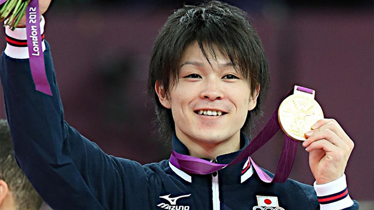

画像出典：http://www.asakawakagu.co.jp/
意外にも小中学生時代は器械体操部だったという池村氏。世界選手権2015で内村選手が団体優勝を含め３個の金メダルを獲ったことを記念して語ります。
縛られないことの強み
体操の内村選手が世界選手権でまたまた魅せてくれましたね。
イケメンで美しい肉体美、そして世界の頂点とくれば、もう羨ましい限りですわ（妬）。
ちなみに、私めが高校で水球をやっていたことはブログ（2015年04月29日「my自伝シリーズ～屋外プールの悲劇～」参照）で書きましたが、実は小～中学生の頃は器械体操をやっていたんです。
さて、内村選手の経歴を並べ立てると、どれだけストイックに節制しているんだよ…って思うわけですが、いろいろ調べてみると意外にもやりたいようにやっている（もちろん、体操に関する努力は尋常ではないでしょうが）部分が多いそうなんです。
どういうことかというと、例えば食事など。
彼は基本的には好きな物しか食べないらしいです。栄養バランスは無視。
ですから、野菜を食べず肉と米ばかり。
さらにはハンバーガーなどのジャンクフードやお菓子が大好き。
それでいて体脂肪率が２％台って…夜に炭水化物を控え筋トレしている私に謝りなさい（笑）。
食事以外にも、筋トレが嫌いなのでやらない（これは別にどうでもよいとは思います。体操選手は競技の練習だけで基本的に筋肉がつくので）とか、さらには驚いたことに喫煙者であるなど、要するに制限や節制をするということの真逆をいっているわけです。
真面目に禁欲的にひたすら耐えている人がかわいそう？
まぁ、何となくそういう気持ちにもなりますよね。
私たち日本人は、そういうことが美徳だと感じるカルチャーに身を染めて生きているわけですから。
でも私は、これこそが内村選手最大の強みだと私は思うのです。
つまり‘縛られない’こと自体の強み。
そもそも世間一般の常識を自らに安易に当てはめないところが世界レベルじゃないですか！
偏食云々については体質そのものの問題が大きいのかもしれません。
でも喫煙について言えば、持久力よりも瞬発力が要である体操競技においては、そこまで影響がないと考えられるし、実際影響しているようには見えません。
むしろ、食べたいものを我慢し、やりたいことを制限することからくる精神的ストレスを考慮するなら、理にかなった過ごし方と言えるでしょう。
反論の余地もあるとは思いますが（彼は天才なんだから参考にならないなど）、少なくともうまくいっていることは認め、参考にしてみるべきです。
勉強にも制約はない
こういうことは机上の勉強についても応用して考えられるのではないかと思うんです。
例えば「漢字や英単語は何度も書きながら覚えるもの」という広く受け入れられた‘常識’があります。
それって本当に正しいの？
私自身はそういう地道学習が性に合わないこともあり、繰り返し書いて覚える行為をあまりしませんでした。
やりたくないことは強制されたとしても形だけを取り繕うことになり、結果はついてきません。
では、どうするのか。
覚えること、身につけることが目的であって、書くことが目的でないことを理解するべきなんです。
そうすれば自ずととるべき手段をとることになります。
私の場合は書かずに目で見て覚えたいと思っていたのでそうしていました。
ただし、本当に覚えているかを確認したい（ココが重要！）という気持ちがありましたから、そのときに空中で腕を動かしてその漢字や英単語を書く「エアー書き」をしていたんです。
つまり、図らずも多くの人が言う‘書く’ということの疑似行為を自らしていたということになります。
要するに、内村選手のように‘やりたいようにやる’中で、目的に向かっていれば正しい選択になるんです。
もちろん、やりたいようにやって全く成果がでないときもあるでしょう。
そういときには人のアドバイスにも耳を傾ける必要はあります。
ただし、絶対に鵜呑みにはしないこと。
これが肝心です。
自分の頭で考えることをやめては成長しません。
よくノートを綺麗にとらなくてはいけません、と言われてその通りにしているのにテストをしてみると全く結果が出ない人がいます。
大抵の場合は「ノートという作品を仕上げること」が目的となってしまい、何色ものペンを使って丁寧に書き写すことに集中しているためです（子どもたちを見ていると女子にこの傾向が強い）。
一方、ノートなんかとらずに腕組みしてじーっと話を聞いているだけのテキトー系男子がテストで見事な結果を出すこともよく見かけます。
おそらく彼の中では「理解すること」「自力でできるようにすること」を目的にしていて、その結果として自然に「しっかり話を聞く」という手段をとったのでしょう。
自分が、後からノートをじっくり見返さないとダメなタイプだとわかっていればノートをとればいいと思います。
それでいて話を聞き逃さないようにすることが難しいなら、授業中はメモ程度にしておき自宅で綺麗に仕上げるなど、自分で工夫すればどうにでもなりますよね。
結局は‘自分のやり方’を確立できた人が強いです。
それは多くの生徒を見てきて確信できますね。
※次回は勉強において内村選手のようにオールラウンダーであるべきか、について語ります。
付録：体操プチ疑問にお答えします
Ｑ：体操選手って、上半身はあんなにムキムキマッチョなのに、足はとても細いのは何故でしょうか。気になって夜も眠れません。
Ａ：元体操部の池村です。えーとですね、そもそも体操競技（特に男子）というのは足をあまり使わないんです。鉄棒を始め、あん馬、平行棒、吊り輪、は着地のとき以外は大きな負荷がかかりません。つまり、一般人と比べて何倍もの筋力を要する上半身に比べ、脚力はそこまで必要ありませんし、鍛えられる場面そのものが少ないのです。
また、床や跳馬については、走り込んだ勢いを一瞬で上方向にシフトするため一瞬の勢いがあれば十分です。しかも床の素材は特殊で跳ねやすく、跳馬で踏み切る板はロイター版といって、完全にバネ仕掛けになっていることは皆さんもご存知だと思います。
さらに、足に不要な筋肉がついていると、演技に不利となります。すなわち重心が下に下がるからです。むしろ一般人や下半身の強靭さが必要なアスリートに比べ、体操選手は極端に重心が上にあることは極めて有利なのです。例えばバク宙をすることを考えてみて下さい。飴玉のチュッパチャップスで例えましょう。
画像出典：http://gigazine.net/news/20130428-chupa-chups-ice/
重心が下にある人は飴玉を下にして、それを上まで持ち上げるジャンプ力が必要です。でも重心が上にある人は飴玉を上側にして一回転すればいいわけです。すなわち、最初から重さの大半は床から高い位置にあるのですから、あとは軽い足をポーンと上に跳ね上げてクルッと回転しちゃえばよいのです。
体操選手があのような筋肉バランスになっているのはとても理にかなっているわけです。